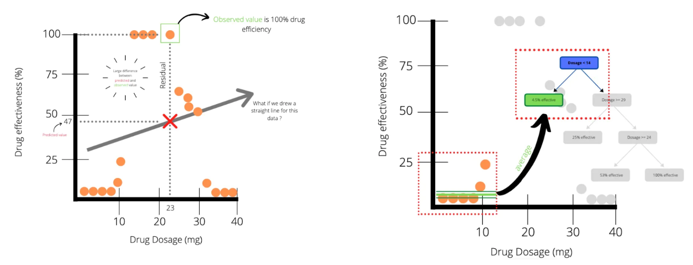
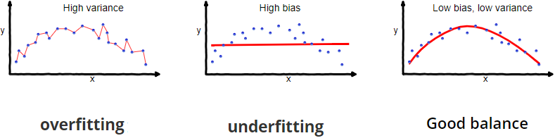
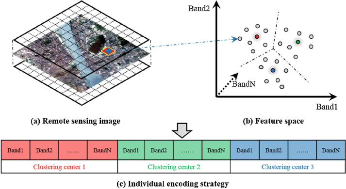
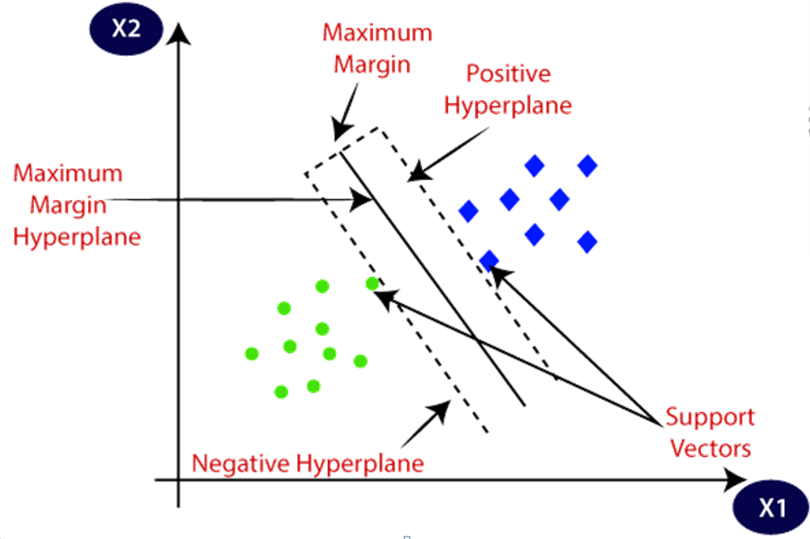
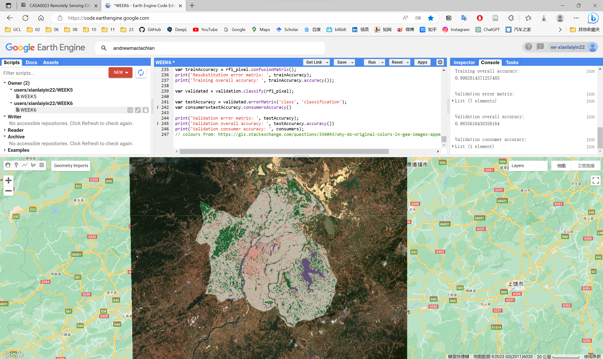

WEEK 6
Classification
This is a learning diary of CASA0023 WEEK 6, the lecture presentation is here, and the practical material is here.
1 Summary: lecture
This week, after understanding the basic concepts of machine learning, classification and regression trees (CART) including regression trees, overfitting, random forests were studied. After that, extend it to the field of image classification and learn about unsupervised classification including DBSCAN, ISODATA and supervised classification including maximum likelihood, support vector machine (SVM).

1.1 How classified data is used
In some form all these studies extracted Land Cover from EO data
- Urban expansion
- Air pollution and LULC
- Urban green spaces
- Monitoring forests + illegal logging
- Forest fires
1.2 Introduction of machine learning
Expert Systems
A system that uses human knowledge to solve problems that normally require human intelligence
Knowledge Base= Rules of thumb, not always correctInference Engine= Process of reaching a conclusion and the expert system is implemented- You might try and represent your knowledge through a series of decisions = knowledge representation through a decision tree
Machine learning
Machine learning= science of computer modeling of learning process- When humans have some generalizations we can reach a logical assumption or conclusion =
inductive learning - Machine learning is a search through all the data to explain the input data and can be used on new input data
Is linear regression machine learning?
Yes, the model finds the best fit between independent and dependent variables- You are fitting a model to some data which could be used for prediction
1.3 Classification and regression trees (CART)
Composition
Classification trees: classify data into two or more discrete (can only have certain values) categoriesRegression trees: predict continuous dependent variable, subset the data into smaller chunks
Gini Impurity
When we create a decision tree the final leaves might be a mixture of the categories = impure, quantify this with the Gini Impurity
- 1-(probability of yes)^2-(the probability of no)^2
- Weighted based on numbers
- The one with the lowest impurity goes at the top of the tree to start the decision making…
the root - We then use the Gini impurity at each
branchto split the nodes further - Once we don’t need to split these turn into
leavesand the output hasthe most votes
Regression trees

Difference
- Take and predict continuous values (e.g. amount of pollution)
- Classification trees take and predict discrete values (e.g. landcover)
- Each leaf is a numeric value not category like in classification trees
How do we decide where to make the breaks in the data?
residuals (like linear regression) for each threshold (which is a value on the x axis)
- We divide this up into sections based on thresholds (nodes) and calculate the sum of the squared residuals
- We can then check the SSR for different thresholds, the one with the lowest SSR is the root of the tree to start with, then repeat
- To prevent over fitting we can set a minimum number of observations before splitting the data again
We can do this with many predictor variables, we try different thresholds and calculate the sum of squared residuals (SSR) - e.g. age or gender
Overfitting
What if we have a leaf with just one person or one pixel value? = overfitting

Bias= difference between predicted value and true value = oversimplifies modelVariance= variability of model for a given point = does not genearlise well
How to limit overfitting?
- Limit how trees grow (e.g. a minimum number of pixels in a leaf, 20 is often used)
- Weakest link pruning (with tree score)
- Use one less leaf, remove a leaf =
sub-tree, SSR will get larger =termed PRUNINGorcost complexity pruning - Tree score = SSR + tree penalty (alpha) * T (number of leaves)
- Changing Alpha (Different values of alpha give us give different sub trees and tree scores)
- Use a full size regression tree (with
all data) - Start with a value of 0 (this will give lowest value of tree score)
- Then increase until
pruning(removing a leaf) gives lowertree score - Save those alpha values
- Use a full size regression tree (with
- Go back to all the data
- Divide the data into training (70%) and testing data (30%)
- Take training data and use alpha values from before
- Each alpha will be made into a new tree with this new data
- Take each tree
- Place the testing data within the divisions based on the different trees
- Calculate the SSR with the test data (testing data bold, train light)
- Which tree has the
smallest SSR
- Repeat previous slide with different training and testing data (10 times cross validation), on average from the 10 tests the value of alpha that gives lowest SSR from testing data is the final value, select the tree from that used the full data with that alpha!
- Use one less leaf, remove a leaf =
Random Forests

- Grow many classification decision trees -
Many better than one- Take our data and take bootstrap samples (same data can be picked many times)
- Make decision tree from random number of variables (never all of them)
- Next at the node take a random subset of variables again =
RANDOM - Repeat
- We get many, many different trees = a
forest - Run the data we have down the trees
- Which option gets more votes based on all the tree
- Bootstrapping (re-sampling by replacement data to make a decision =
bagging)- For each tree about 70% of the training data is used in the bootstrap, 30% is left out of the bag (OOB)
- Test the OOB data in the forest where all the trees didn’t use it and repeat for all OOB samples, most votes wins!
- Out of Bag Error: proportion of OOB incorrectly classified = OOB error
- Often the number of variables per tree is calculated from square root of variables in the original data.
- No pruning: trees can do down to largest extent
Validation data: different from OOB and never included within the decision trees
1.4 Image classification
Turn every pixel in the image into one of a pre-defined categorical classification, either supervised or unsupervised classification procedure, there are generic machine learning algorithms and remote sensing specific ones
Characteristic
Supervised
Pattern recognitionormachine learning- Classifier learns patterns in the data
- Uses that to place labels onto new data
Pattern vectoris used to classify the image
Unsupervised
- Identify of land cover classes aren’t know a
priori(before) - Tell them computer to cluster based on info it has (e.g.
bands) - Label the clusters
Unsupervised classification (Clustering / K-means)

DBSCAN
radius(Epsilon) and min points(for the cluster): place points randomly or uniformly across spectral feature space or across the first PCA
- Set the radius in spectral feature space at which new cluster to new started
- Spectral distance to merge (within they are the same)
- Number of pixels to be considered before merging
- Max number of clusters
- Clusters migrate over time
- Repeat until N iterations or no allocations of pixels left
ISODATA
Same as k-means but adds:
- Any clusters have so few pixels =
meaningless - Clusters are so close they can be merged
- Clusters can be split - elongated clusters in feature space
Typically inputs can include:
- Max clusters
- Max % pixels of class values that can be unchanged - stops
- Max times of iterations
- Min pixels per cluster
- Max standard deviation - then split the cluster
- Min distance between clusters
Cluster busting: ISODATA can create lots of clusters and it’s difficult to assign meaning (e.g. landcover)
- Two types of landcover in the pixel
- Distribution of mean vectors not good enough to differentiate them
- Let’s bust those clusters!
- Take the incorrect or difficult to label ones
- Mask them
- Perform a separate classification
- Repeat
Supervised classification

Methods
Parametric(normal distribution): Maximum likelihoodNon-parametric(Non-parametric): Density slicing, Parallelpiped, Minimum distance to mean, Nearest neighbor, Neural networks, Machine learning / expert systems- More recent work uses
machine learning/expert systems(e.g. Support Vector Machine, Neural Networks ) orspectral mixture analysis
Same process for all
- Class definition
- Pre-processing
- Training
- Pixel assignment
- Accuracy assessment
An approach to select a classifier…in most cases training samples will overlap…unless you select spectrally pure endmembers or use a spectral library
Maximum likelihood
- Basics
- Decision rule classifier
- Uses probability
- Takes the image and assigns pixel to the most probable land cover type
- You can set a probability threshold which means if a pixel is below it = no classification
- Specifics
- From histogram to probability density function: mean and standard deviation of training data
- In imagery this is n dimensional multivariate normal density function
- Each pixel from image data is passed to the maximum likelihood rule > assigns landover to the largest product
- The key is it is based on probability…the data (landcover) most probably to have the values in our pixel
Maximum Likelihood allows classification with prior pobablity information (e.g. 60% expected to be urban, usually we don’t have this though)
Pattern vector: all the band values per pixel (could include texture etc)
Support Vector Machine (SVM)
Simply a linear binary classifier - like logistic regression
- Maximum margin between two classes of training data =
maximum margin classifier - Points on the boundaries (and within) are
support vectors - Middle margin is called the
separating hyperplane Soft margin= allow some misclassificaitons to occur
- We use cross validation to know how many misclassifications to allow
- Aim is to get best classification, whilst allowing some wrongly classified points
- More than 2 datasets we go into 3D and use a
planenot aline - Can decide how we seperate data, One-to-One or One-to-Rest
- Underlying theory is
structural risk minimisation: minimise error on unseen data with no assumptions on the distribution - Selectable
- Type of kernel
- Hyperparameters like C and Gamma (or Sigma) control SVM wiggle
Ccontrols training data and decision boundary maximisation plus margin errors. The bigger = narrower margin.Gamma(or Sigma) = controls the distance of influence of a training point. low = big radius for classified points, high = low radius for classified points (only once we have transformed our data can we apply gamma)
- If they aren’t linearly separable we can transform the data with the
kernel trick(apply some function to make them linearly separable) - How do we select the best values of C and gamma: we test them all (or all the ones you want to) using grid search and compare them to our testing data…the ones that give the best accuracy are selected
- Many models have hyperparameters that can’t be learned directly from a single data set when training the model. This means you might have to test the hyperparameters after model training / run the model several times. However, in
tidymodels, we can train many models in a grid of possible hyperparameter values and see which ones turn out best
- In SVM we want to make sure each data set is on the correct side of a hyper plane, it does so through:
- Maximising the margin (the smallest residual)
- Minimising misclassified points:
"soft margin" - Changing C changes the “slope” - consider more points
2 Summary: practical
This week’s practical will consist mainly of the following:
- Acquire remote sensing image data using GEE and perform basic operations such as clipping and mosaicing of data
- Remote sensing image pre-processing and band mathing using GEE
- Exporting GEE analysis results
- GEE-related applications and data
In this week’s practical, I learnt the basic operations of remote sensing data processing using GEE. I followed the instructions to process and analyse the Landsat remote sensing image data from New Delhi, including texture measures, PCA, band math, etc. However, I was pleasantly surprised to learn about a lot of applications developed using GEE, which were very interesting and greatly broadened my view of remote sensing image applications and made me look forwards to developing applications using GEE.
